")
Summoning - Pouches
Introduction
All summoners need pouches to summon their familiars. Through the power of the obelisks, they are able to bind the essence of a creature into the pouch to be released later. In addition, they can use these pouches to create scrolls to empower their creatures to use special abilities.
For more information about creating pouches, please read Summoning - The Basics.
| Pouch | Summoning Level Required | Components | Summoning Experience Gained | |||||||
 Spirit wolf |
1 |
 Spirit shard |
x 7 |  Gold charm |
 Wolf bones |
4.8 | ||||
| 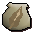 Dreadfowl |
4 |
Spirit shard |
x 8 | Gold charm |
 Raw chicken |
9.3 | ||||
 Spirit spider |
10 |
Spirit shard |
x 8 | Gold charm |
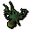 Spider carcass |
12.6 | ||||
 Thorny snail |
13 |
Spirit shard |
x 9 | Gold charm |
 Raw thin snail |
12.6 | ||||
 Granite crab |
16 |
Spirit shard |
x 7 | Gold charm |
 Iron ore |
21.6 | ||||
 Mosquito |
17 |
Spirit shard |
x 1 | Gold charm |
 Proboscis |
46.5 | ||||
 Desert wyrm |
18 |
Spirit shard |
x 45 | 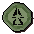 Green charm |
 Bucket of sand |
31.2 | ||||
 Spirit scorpion |
19 |
Spirit shard |
x 57 |  Crimson charm |
 Bronze claws |
83.2 | ||||
 Spirit Tz-Kih |
22 |
Spirit shard |
x 64 | Crimson charm |
 Obsidian charm |
96.8 | ||||
 Albino rat |
23 |
Spirit shard |
x 75 |  Blue charm |
 Raw rat meat |
202.4 | ||||
 Spirit kalphite |
25 |
Spirit shard |
x 51 | Blue charm |
 Potato cactus |
220 | ||||
 Compost mound |
28 |
Spirit shard |
x 47 | Green charm |
 Compost |
49.8 | ||||
 Giant chinchompa |
29 |
Spirit shard |
x 84 | Blue charm |
 Chinchompa |
255.2 | ||||
 Vampire bat |
31 |
Spirit shard |
x 81 | Crimson charm |
 Vampire dust |
136 | ||||
 Honey badger |
32 |
Spirit shard |
x 84 | Crimson charm |
 Honeycomb |
140.8 | ||||
 Beaver |
33 |
Spirit shard |
x 72 | Green charm |
 Willow logs |
57.6 | ||||
 Void ravager |
34 |
Spirit shard |
x 74 | Green charm |
 Ravager charm |
59.6 | ||||
| 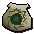 Void shifter |
34 |
Spirit shard |
x 74 | Blue charm |
 Shifter charm |
59.6 | ||||
 Void spinner |
34 |
Spirit shard |
x 74 | Blue charm |
 Spinner charm |
59.6 | ||||
 Void torcher |
34 |
Spirit shard |
x 74 | Blue charm |
 Torcher charm |
59.6 | ||||
 Bronze minotaur |
36 |
Spirit shard |
x 102 | Blue charm |
 Bronze bar |
316.8 | ||||
 Bull ant |
40 |
Spirit shard |
x 11 | Gold charm |
 Marigolds |
52.8 | ||||
| 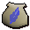 Macaw |
41 |
Spirit shard |
x 78 | Green charm |
 Guam |
72.4 | ||||
 Evil turnip |
42 |
Spirit shard |
x 104 | Crimson charm |
 Carved turnip |
184.8 | ||||
 Spirit cockatrice (and variants) |
43 |
Spirit shard |
x 88 | Green charm |
 Cockatrice egg (or variant) |
75.2 | ||||
 Iron minotaur |
46 |
Spirit shard |
x 125 | Blue charm |
 Iron bar |
404.8 | ||||
 Pyrelord |
46 |
Spirit shard |
x 111 | Crimson charm |
 Tinderbox |
202.4 | ||||
 Magpie |
47 |
Spirit shard |
x 88 | Green charm |
Gold ring |
83.2 | ||||
 Bloated leech |
49 |
Spirit shard |
x 117 | Crimson charm |
Raw beef |
215.2 | ||||
 Spirit terrorbird |
52 |
Spirit shard |
x 12 | Gold charm |
 Raw bird meat |
68.4 | ||||
 Abyssal parasite |
54 |
Spirit shard |
x 106 | Green charm |
 Abyssal charm |
94.8 | ||||
 Spirit jelly |
55 |
Spirit shard |
x 151 | Blue charm |
 Jug of water |
484 | ||||
 Ibis |
56 |
Spirit shard |
x 109 | Green charm |
 Harpoon |
98.8 | ||||
 Steel minotaur |
56 |
Spirit shard |
x 141 | Blue charm |
 Steel bar |
492.8 | ||||
 Spirit graahk |
57 |
Spirit shard |
x 154 | Blue charm |
 Graahk fur |
501.6 | ||||
 Spirit kyatt |
57 |
Spirit shard |
x 153 | Blue charm |
 Kyatt fur |
501.6 | ||||
 Spirit larupia |
57 |
Spirit shard |
x 155 | Blue charm |
 Larupia fur |
501.6 | ||||
 Karamthulhu overlord |
58 |
Spirit shard |
x 144 | Blue charm |
Empty fishbowl |
510.4 | ||||
 Smoke devil |
61 |
Spirit shard |
x 141 | Crimson charm |
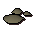 Goat's horn dust |
268 | ||||
 Abyssal lurker |
62 |
Spirit shard |
x 119 | Green charm |
Abyssal charm |
109.6 | ||||
 Spirit cobra |
63 |
Spirit shard |
x 116 | Crimson charm |
 Snake hide |
276.8 | ||||
 Stranger plant |
64 |
Spirit shard |
x 128 | Crimson charm |
 Bagged plant |
281.6 | ||||
 Barker toad |
66 |
Spirit shard |
x 11 | Gold charm |
 Swamp toad |
87 | ||||
 Mithril minotaur |
66 |
Spirit shard |
x 152 | Blue charm |
 Mithril bar |
580.8 | ||||
 War tortoise |
67 |
Spirit shard |
x 1 | Gold charm |
 Tortoise shell |
58.6 | ||||
 Bunyip |
68 |
Spirit shard |
x 110 | Green charm |
 Raw shark |
119.2 | ||||
 Fruit bat |
69 |
Spirit shard |
x 130 | Green charm |
 Banana |
121.2 | ||||
 Ravenous locust |
70 |
Spirit shard |
x 79 | Crimson charm |
 Pot of flour |
132 | ||||
 Arctic bear |
71 |
Spirit shard |
x 14 | Gold charm |
 Polar kebbit fur |
93.2 | ||||
| 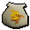 Phoenix* |
72 |
Spirit shard |
x 165 | Crimson charm |
 Phoenix quill |
301.8 | ||||
 Obsidian golem |
73 |
Spirit shard |
x 195 | Blue charm |
Obsidian charm |
642.4 | ||||
 Granite lobster |
74 |
Spirit shard |
x 166 | Crimson charm |
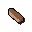 Granite (any) |
325.6 | ||||
| 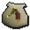 Praying mantis |
75 |
Spirit shard |
x 168 | Crimson charm |
 Red, yellow, blue, purple, orange or mixed flowers |
329.6 | ||||
 Adamant minotaur |
76 |
Spirit shard |
x 144 | Blue charm |
 Adamantite bar |
668.8 | ||||
 Forge regent |
76 |
Spirit shard |
x 141 | Green charm |
 Ruby harvest |
134 | ||||
 Talon beast |
77 |
Spirit shard |
x 174 | Crimson charm |
 Talon beast charm |
1015.2 | ||||
Giant ent |
78 |
Spirit shard |
x 124 | Green charm |
 Willow branch |
136.8 | ||||
 Fire titan |
79 |
Spirit shard |
x 198 | Blue charm |
 Fire talisman |
695.2 | ||||
 Ice titan |
79 |
Spirit shard |
x 198 | Blue charm |
|
695.2 | ||||
 Moss titan |
79 |
Spirit shard |
x 202 | Blue charm |
 Earth talisman |
695.2 | ||||
 Hydra |
80 |
Spirit shard |
x 128 | Green charm |
 Water orb |
140.8 | ||||
 Spirit dagannoth |
83 |
Spirit shard |
x 1 | Crimson charm |
 Dagannoth hide |
364.8 | ||||
 Lava titan |
83 |
Spirit shard |
x 219 | Blue charm |
Obsidian charm |
730.4 | ||||
 Swamp titan |
85 |
Spirit shard |
x 150 | Crimson charm |
 Swamp lizard |
373.6 | ||||
 Rune minotaur |
86 |
Spirit shard |
x 1 | Blue charm |
 Runite bar |
756.8 | ||||
 Unicorn stallion |
88 |
Spirit shard |
x 140 | Green charm |
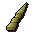 Unicorn horn |
154.4 | ||||
 Geyser titan |
89 |
Spirit shard |
x 222 | Blue charm |
Water talisman |
783.2 | ||||
 Wolpertinger |
92 |
Spirit shard |
x 203 | Crimson charm |
|
404.8 | ||||
 Abyssal titan |
93 |
Spirit shard |
x 113 | Green charm |
Abyssal charm |
163.2 | ||||
 Iron titan |
95 |
Spirit shard |
x 198 | Crimson charm |
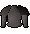 Iron platebody |
417.6 | ||||
| 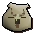 Pack yak |
96 |
Spirit shard |
x 211 | Crimson charm |
 Yak hide |
422.4 | ||||
 Steel titan |
99 |
Spirit shard |
x 178 | Crimson charm |
 Steel platebody |
435.2 | ||||


* To create a phoenix pouch, you must have completed In Pyre Need.

More articles in
Summoning (Members Only)
|
|
|
Further Help
If this article does not help you, you may find the following sections of the RuneScape site helpful:
|
|